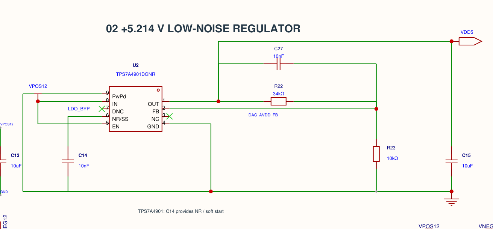

2026-10-13 · 원본 DAC8562 module의 Page 1 / Page 2 · Board1, 100×100mm 2층
1. +5.214V LDO는 OUT–R22/C27–FB–R23와 출력/NR 커패시터를 직접 와이어로 정리했습니다. IN/EN은 같은 VPOS12이고 NR과의 교차에는 접속점이 없습니다. 전기적 핀 네트는 유지했습니다.
2. R102 아래 핀은 MCU_VBIAS이지만 윗핀은 MCU_RECEIVE_A가 아니라 독립 자동 네트 $2N434입니다. 따라서 현재 그 10MΩ 경로는 연결되지 않았습니다. 점 색만으로 모든 교차를 판단하지 말고 핀 네트로 확인해야 합니다. 이 경우 회색 T점은 실제 미연결입니다. 사용자 요청대로 이 분기는 변경하지 않았습니다.
3. 업로드된 한 핀 네트 경고를 일괄 무시하면 안 됩니다. 실제 누락된 SPI/MCU 분기의 네트 연결은 복구했고 R102 한 건만 유지했습니다. 전체 핀 네트를 이전 검증본과 대조한 결과 R102.1만 다릅니다. PCB는 이 핀을 원래 MCU_RECEIVE_A에 연결했으므로 회로도와의 불일치도 한 건 남습니다. 보존·핀 대조 증거
일반 와이어를 블록 내부의 기본으로 사용하고, 반복 전원과 블록 경계에는 포트/라벨을 사용했습니다. 실제 EasyEDA SVG export를 렌더링하여 레귤레이터, 06 제어, MCU A/B 채널 및 릴레이 영역을 확인했습니다. 캐시 썸네일을 최신 검증 이미지로 사용하지 않았습니다. 렌더러가 무시한 삽입 로고 1개는 회로 연결과 무관합니다.
확정 설계 BOM · BOM 데이터 · 검토 결과 데이터

EasyEDA native SVG 두 페이지 · Page 1 · Page 2
TI의 수정하지 않은 TPS7A4901 unencrypted model 1.2로 입력 상승 0.1/1/10/100ms × 부하 2/10/20mA × 출력 유효 C 0.5/1.0을 계산했습니다. 기동 전용 24/24건 수렴 및 전압 범위 선별 통과, 모델 출력 최대 5.246309V입니다. 모델의 기준전압 1.192V와 데이터시트의 전형값 1.185V 차이를 그대로 유지했습니다. 이것은 최악조건 정확도 보증이 아닙니다. TI 제품·모델
기동+종료+브라운아웃 27건 중 7건은 모델 UVLO 불연속에서 수렴 실패했습니다. 이를 통과로 세지 않았습니다. VIN/음전원은 이상적인 주어진 램프이며 TPS65131 스위칭 전체 회로의 검증이 아닙니다. PG 안정 2ms + 초기화 5ms는 논리 선별용 가정이며 DAC 초기화 보증 시간이 아닙니다. Enable을 미리 HIGH로 유지하면 초기화 이전 노출 및 브라운아웃 자동 재활성화가 가능합니다.
24건 수치 · 종료 실패 포함 27건 · 모델·재실행·제한
실제 패드 489개, 연결된 패드 481개, 90개 네트를 동박·비아·GND 영역 기준으로 별도 검사했습니다. 현재 PCB 동박 단락/단선 0건, 회로도 대조 차이는 R102.1 하나입니다. 배치·패드 네트·배선 원본은 유지하고 부품표 메타데이터만 동기화했습니다.
선폭 최소 0.153mm, 비아 드릴 0.305mm, 비아 홀→다른 네트 트랙 최소 0.306mm, 비아 홀간 0.335mm입니다. 동박→기판 외곽 최소 0.500mm. Samtec J1은 2.54mm 피치/행 간격, 기존 홀 1.100mm/패드 1.7mm와 대조했습니다. 마스크 브리지 간격 8곳의 약 0.098mm 문제는 검토 CAM에서 0.10mm 미만 0곳으로 보완되지만, 저장 프로젝트 master에는 반영되지 않았으므로 반드시 CAD에서 해결해야 합니다. 실크는 패드 마스크에서 약 0.15mm 이격하도록 검토 사본에서만 잘랐습니다. JLC 규격
홀·선폭 검사 · CAM 최소 간격 · 패드·물리적 동박 검사. Gerber 상면 생성 패드에는 이전 export 대비 약 0.0016mm 수준의 반올림 차이가 있어 바이트 동일을 주장하지 않습니다. 제조 파일은 새로 재생성해 검토해야 합니다.
가격 고려 결정은 기존 단일 100×100mm 보드를 유지합니다. 시제품 수량이 지정되지 않았고 현재 보드는 단일 소형 특가 구간인 반면 마우스바이트 패널은 면적·라우팅 비용이 늘어납니다. 고정 견적을 제시하거나 주문하지 않았습니다. Panel1은 변경하지 않았습니다. 제조사 요금 구분
Native 검토 체크포인트 · 이식용 검토 export · 주문 금지 DFM 참고 ZIP. 원본 작업 전 SQLite 및 live export 백업은 backups에 보존했습니다. 이전 final-review 파일은 과거 검토 기록이며 현재 제작 상태가 아닙니다.
Git 전달은 실제 commit 및 origin/main 일치로 확인합니다. 보고서 자체가 향후 push 성공을 예측하지 않습니다.